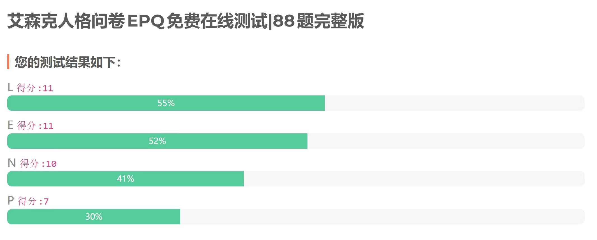
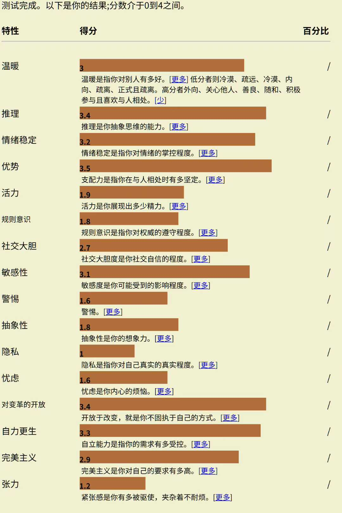
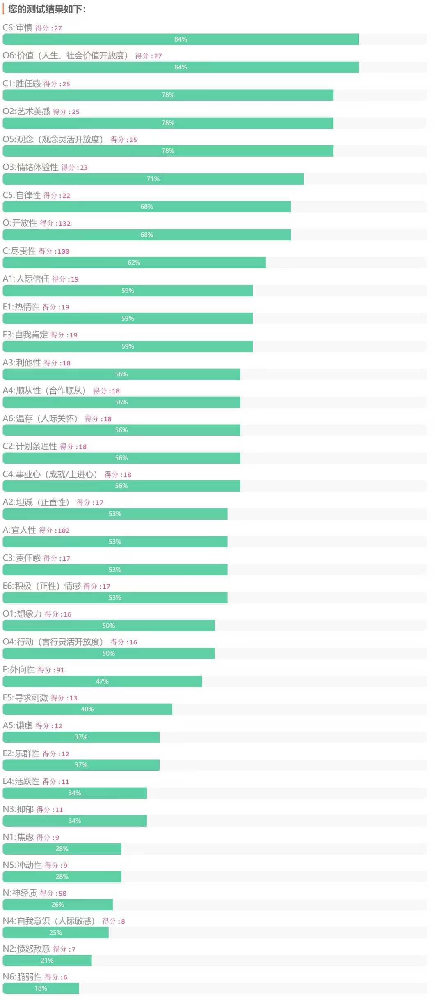

认识自己是认识世界的第一步。相信世界是流动的、成长是复利的、实践是检验的唯一标准。
通过运动保持身体与心灵的活力；通过阅读和思考不断扩展认知边界。每一天都是一次新的自我强化。
三份量表，三种视角，让你更全面地认识我。

卡特尔16种人格因素问卷

艾森克人格问卷修订版

大五人格量表修订版
我理解世界的方式，亦是安放自己的坐标。
世界是流动的——没有一成不变的事物，适应变化是生存与成长的根本。
成长是复利的——每天进步1%，一年后就是37.8倍的自己。
实践是检验的唯一标准——行动胜过空想，结果说明一切。
1. 诚信负责：说到做到，有变动提前说，事事有交代。
2. 责任担当：遇事先解决再复盘，不甩锅不推诿。
3. 情绪稳定：就事论事，不宣泄情绪不人身攻击。
4. 共赢思维：愿意分享、双向付出，不搞单方面索取。
5. 底线原则：守规矩、有敬畏，凭本事不搞歪门邪道。
6. 真诚坦荡：当面沟通不藏事，不搞背后小动作。
1. 主动学习：保持输入，不局限于课本，对新知识有好奇心。
2. 持续成长：有自己的成长节奏，能复盘迭代自我。
3. 辩证思维：理性全面看问题，能听不同意见。
4. 靠谱回应：约好的事不鸽、答应的事不沉，有进度会说一声。
5. 边界尊重：有边界也尊重别人，不绑架不越界。
6. 开放心态：包容新想法，敢试错能从挫折中成长。
7. 健康管理：规律作息，不长期透支身体；规律运动，保持稳定精力。
8. 时间管理：能掌控碎片化时间，做事时保持长时间专注状态。
1. 习惯性失信：经常放鸽子、答应的事没下文还无所谓。
2. 遇事甩锅：有好处就抢、出问题就躲，从不反思。
3. 情绪攻击：一点就炸，冷暴力或当众撒气。
4. 极度自私：只想躺赢蹭好处，从不付出。
5. 无底线者：作弊抄袭造假，可能出卖朋友。
6. 两面派：背后挑拨煽动情绪，当面不沟通。
为什么有的人对爱忠贞不渝，甚至殉情，而有的人肆意滥交，却从未爱过。为什么明明爱令人那么痛苦，人们却对它趋之若鹜？
历经无数年的生存和繁衍，利于生存的基因被保留，不利于生存的基因载体死亡，不断演化，最终在大约400万年前，浪漫爱情的神经元第一次在人科祖先中出现。在那时，爱的职能为提高繁殖成功率、为后代提供稳定的养育环境、促进合作和群体凝聚力、提高生存适应性。若仅仅是如此，爱又如何影响现代人的生活形成丰富多彩的形态？
在与爱人相处时，大脑中富含多巴胺的区域会激活，这一区域与快乐、一般唤醒、专注注意力和追求获得奖赏的动机相关。催产素和血管加压素升高，降低焦虑、增强信任、抑制背叛、增强亲密接触。
当人们被爱人看见、尊重、偏爱、接纳时，多巴胺、催产素、血管加压素等物质都会促使人们产生快乐、温暖、心安、甜蜜的感觉，这些感觉又会促使人们采取看见他人、尊重他人、偏爱他人、接纳他人的行为，形成正向反馈，循环往复，爱就出现了并在彼此间流动。
因此我们可以爱任何人，也可以被任何人所爱。那么我们是如何选择爱人的？我们又为什么反复爱上同一类人？
依恋是具有生存价值的本能行为系统，旨在保护幼体免受威胁。照顾者在幼体采取不同的养育策略会使其形成不同的依恋类型：安全型、回避型和焦虑－矛盾型。安全型依恋的成人在爱情中表现出信任、稳定和积极的期待；回避型依恋的成人倾向于保持情感距离，对亲密关系感到不适；焦虑-矛盾型依恋的成人则表现出对关系的过度关注和不安全感。
比外貌优先的情感互动。抚养者是人生第一个爱的样本，我们会天然亲近于外貌、性格、神态、语气、动作、对待方式与抚养者相似的人。在后续不断喜欢上其他人的过程中，样本不断更新，某些特质的神经区域被增强，并在见到某些特定的人时，这块神经区域会激活，并连锁激活与爱相关的模块，于是一见钟情，或是日久生情。
爱的反义词不是恨，而是痛。个体会天然贪恋熟悉与安全的环境与体验，当被看见、被重视、被偏爱、被接纳成为习惯，大脑会将这段关系默认为"安全区"，当关系结束时，个体仍会本能地想待在原地，无法跳出固有的情感模式。
人们畏惧亲人的死亡，亦是如此。死亡对于活在世界上的人来说，是少了一个爱他的人，少了一个看见、照顾、理解、接纳他的人。我们恐惧的不是死亡，而是不被爱，爱得越深执念越深。
执念是今天新引入的概念，并无多少研究与思考。它是人的一部分，也是爱的一部分，它无处不在。
执念很深的人，也是坚持不懈，坚韧不拔的人。苏轼说"古之立大事者，不惟有超世之才，亦必有坚忍不拔之志。"世间大部分人都没有，亦是普通人。纯粹的理性思考而不考虑情感的因素是不可取的，希望通过此篇文章，让你认识爱之实，在理性与情感中、痛苦与爱中寻得一条中庸之道，而不被执念所困。
形而上之美，被理性解构成形而下具象逻辑，那份诗意就此消散。
人可以轻易喜欢任何人，不过是分泌激素本能；也能爱众生万物，只需拥有足够的慈悲。
爱的唯一性，就是人的唯一性——扎根于灵魂，沉淀于经历。
人真的无可替代吗？形而下看：基因有双胞胎复刻，容貌有路人撞脸相似，学识、能力、财富等外在特质，皆可被他人比肩甚至替代。
唯独灵魂不可复刻。形而上往下看：自生命降生伊始，每一分每一秒都无限动态演化，你每次抉择、每番思考、每段亲身亲历，所有独属于你的生命轨迹交织累积，无人能够复制，最终塑成了独一无二的你🫵
人们如何爱唯一的人，在ta有缺时如同亲人父母般不离不弃，而非移情别恋，想必就是爱构成ta过往的独特经历，以及爱曾经或未来和ta一起创造的独特经历罢。
小时候我不懂这句话，因为我是站在被审视的那一端。高中时只觉得是无稽之谈——人的一生明明有无数变量，怎么可能凭幼年的模样，就定了终身的走向。
这句俗语的核心，从来不是预判孩子的先天素质与人生上限，而是揭示了一个朴素本质：孩子的一言一行、心性底色，就是他所处的家庭、养育环境等所有社会关系共同作用的结果。正应了马克思那句经典之言：人是一切社会关系的总和。孩子的模样，正是他所处的一切社会关系的综合缩影。（基因决定论的迷信已经是上一个世纪的产物了，当被扫进历史的尘埃）
今天在外吃饭，亲戚小孩千姿百态，我观察思考，突然回想我小时候，总有一些大人，会带着与我如今一模一样的特殊目光看向你，那目光的名字叫审视——审视你值不值得他倾注自己的思想与教育，审视这份心思花在你身上，能否有预期的成效，而非白费。
可那时的我于他们而言，终究是个外人。外人能做的事太少，有时忍不住多说两句，有时又恨铁不成钢，最后只能劝自己别多管闲事，干脆抽离出来，如今我也成为了这个外人。
站在审视的另一端才明白，这种审视，无关性别、年龄、学历，更不是长辈居高临下的评判特权，它的本质，是对儿童人格发展、行为背后的心理、家庭与环境乃至社会的塑造、人与人交往边界的基础认知，是对内的不被孩子情绪影响的定力、是对外穿透表象看见孩子需求的共情能力、以及不妄加评判的中立觉察能力。
透过孩子的行为，往往能窥见其背后的情绪逻辑，支撑这份情绪的固有行为模式，还有以家庭教育为核心的成长环境，为他塑造的处世底层机制。这套机制会在幼年时期打下深刻的人生底色，成为他面对世界时最本能的下意识反应，影响贯穿成长全程，后续想要重塑调整，绝非易事。
也正应了"江山易改，本性难移"的老话。这套处世机制的深度重塑，本质上是对自身固有认知与本能反应的彻底改写，这个过程需要消耗极大的心力，辅以长期坚定的行动，才有可能真正达成。
《对不起》
对不起啊。
我伤害了你，
对不起。
第一次来这人间，
第一次学着做人，
却伤害了你。
对不起啊。
我伤害过的人，
对不起啊。
《原谅》
我原谅了。
你带给我的伤害，
我已经原谅了。
你也是啊，
第一次来到这世界上，
懵懵懂懂地，
第一次学着做人。
你带给我的伤害，
我原谅了。
身是心的容器。保持身体的最佳状态，才能承载更深的思考。
1. 找安静环境，平躺
2. 闭眼，深呼吸，放松身体。
3. 从脚趾开始，依次将注意力移至全身各处直至头顶，呼气时感受部位放松，走神无需刻意纠正。
4. 结束后先活动手脚、伸懒腰，再慢慢睁眼起身。
1. 快速恢复精力，不会出现睡醒发懵的情况，改善午后困倦。
2. 舒缓压力、平复焦虑，减少思绪内耗。
3. 放松肌肉，缓解久坐引发的肩颈、腰背僵硬酸痛。
4. 提升专注力，让思维更清晰。
5. 调节神经状态，帮助改善夜间睡眠。
6. 门槛低，零基础也能轻松练习。
1. 舌尖抵住上门牙后方的牙龈。
2. 闭上嘴巴，用鼻子缓慢吸气4秒。
3. 屏住呼吸7秒。
4. 嘴巴撅嘴缓慢吹气8秒，。
5. 以上为1次完整呼吸，重复4-6次为一组。
1. 快速平复情绪，缓解焦虑、紧张和恐慌发作。
2. 激活副交感神经，帮助快速入睡，改善失眠。
3. 降低皮质醇水平，减轻身体压力反应。
4. 调节心率，缓解心慌、胸闷等躯体症状。
5. 随时随地可做，无需任何工具，零门槛。
6. 长期练习可改善整体呼吸模式，提升心肺功能。
7.短暂停止思考。
1.基础快走：抬头挺胸，手臂自然摆动，步幅适中，速度以能说话但不能唱歌为宜。
2. 路线：走到走廊尽头可上楼或下楼循环路线
3. 节奏：越快激活越快
4.tips：可以使用八步赶蝉+轻哼小调效果更加
1. 快速激活大脑，提升专注力和思维清晰度，效果持续1-2小时。
2. 促进血液循环，缓解久坐导致的大脑缺氧和午后昏沉。
3. 锻炼心肺功能，同时增强下肢肌肉力量。
4. 释放压力，改善情绪，减少焦虑和精神疲劳。
5. 上下楼梯结合能提升代谢效率，比单纯平地快走效果更好。
6. 随时随地可进行，无需特殊场地和器材。
一些让生活更有温度与节奏的事。
用脚步丈量城市，保持身体与意志的韧性。
两轮之上，感受风与自由，探索未知路径。
大自然里散步很放松。
在球场上挥洒汗水，专注与爆发的一瞬即永恒。
善用工具提升效率，保持对科技的好奇与掌控。
书籍是认知的阶梯，持续输入、持续内化。
人生就是最真实的游戏。
善于将心剖开审视，追本溯源。
学习强化，每日精进。复利思维驱动长期成长。
从 2023 到 2026，四年来的心路与足迹。点击查看全文与图片。
访谈 · 用 31 个问题，开启一场真诚的对话。
以上 31 个问题，不只是我问你——它是我们相互理解的桥梁。
许多人在聊完之后发现，原来自己从未这样认真地审视过自己；
而我也会在这个过程中，更深入地认识你。
在回答中重新认识自己，
在对话中彼此照见。
如果你愿意花一小时坐下来，
来一场面对面的真诚对话——
我洗耳恭听，也保证你会有意外的收获。
若有共鸣，不妨来信。点击复制邮箱。